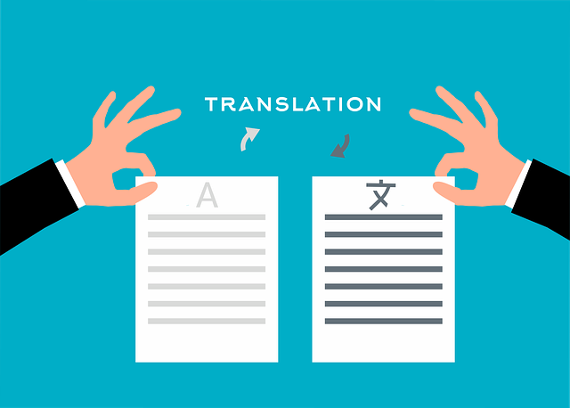

CS1102 - Course Project - 2023/2024 Semester B
Topic: The pros and cons of Large Language Models (LLMs)
| Members |
SID |
| FOK Tsz Ying |
56574045 |
| SUN Ying Kwing |
57140726 |
| ZHANG Zhen |
57846711 |
| CHAU Yin Tau |
57140820 |
Introduction to the Study
LLM stands for Large Language Model. It was not until the release of the generative AI- ChatGPT by OpenAI at the end of November 2022 (Bernard Mard, 2023) , the term “Large Language model” came into the spotlight. Other examples of LLMs include Claude developed by a start-up Anthropic (Oliver Proudfoot, 2024) and LLaMa launched by Meta (Meta, 2023).
A LLM is an Artificial Intelligence algorithm pre-trained by a large amount of data through utilizing the deep learning technique (Sean Michael Kerner, n.d.). Like humans, the Large Language Model can be more “knowledgeable” by continuing learning, while the targeted outcome of the model is to be human-like. Training on vast data, a LLM is able to understand and interpret human languages (IBM, n.d.), ultimately, enabling communication with humans in text.
|

|

|

|
| Translation |
Text Generation |
Sentiment analysis |
Table:Common Applications of LLMs (Sean Michael Kerner, n.d.)
P.S. Images from Pixabay (image #7491350, #2160925, #6852458 respectively)
Though LLMs can convenience us on different occasions, opportunities and threats have been in a heated debate. For instance, the chance of utilizing Artificial Intelligence in business for boosting work efficiency, however doing so may pose a threat to the company when sensitive data is being input like the Samsung employees have accidentally led to internal data leak (Kate Park, 2023). Below are more thought-provoking news or articles regarding LLMs, click the buttons to navigate for reading the news:
In this project, we will study further on LLMs with 4 parts for a comprehensive knowledge on this breakthrough technology in Artificial Intelligence field and present our findings in the form of websites:
- Understanding Architecture of LLMs
- Examining the Pros and Cons of LLMs
- Learning the Limitations of LLMs
- Sharing on Discovery and Summary
Demonstrated Techniques in the Project:
- Clickable links for interactiveness
- Links open in the same tab and Links open in a new tab
- Tables, ordered numbered list or bullet points in structuring and organizing contents
- Javascript: Alert
Explored New Techniques:
- Font size
- Italic font and bold font
- Table padding
- Border of the table
- Cursor: pointer
- Javascript: Buttons
References
- Daws, R. (2024, January 24). NCSC: AI to significantly boost cyber threats over next two years. AI News. Retrieved April 1, 2024, from https://www.artificialintelligence-news.com/2024/01/24/ncsc-ai-significantly-boost-cyber-threats-next-two-years/
- Fazackerley, A. (2023, March 20). AI makes plagiarism harder to detect, argue academics – in paper written by chatbot. The Guardian. Retrieved April 1, 2024, from https://www.theguardian.com/technology/2023/mar/19/ai-makes-plagiarism-harder-to-detect-argue-academics-in-paper-written-by-chatbot
- Introducing LLaMA: A foundational, 65-billion-parameter large language model. (2023, February 24). Meta. Retrieved March 31, 2024, from https://ai.meta.com/blog/large-language-model-llama-meta-ai/
- Kerner, S. M. (2023, September 13). large language models (LLMs). WhatIs. Retrieved April 1, 2024, from https://www.techtarget.com/whatis/definition/large-language-model-LLM
- Marr, B. (2024, February 20). A short history of ChatGPT: How we got to where we are today. Forbes. Retrieved March 31, 2024, from https://www.forbes.com/sites/bernardmarr/2023/05/19/a-short-history-of-chatgpt-how-we-got-to-where-we-are-today/?sh=5df9e04b674f
- Nguyen, B. (2024, March 6). ChatGPT is bad at following copyright law, researchers say. Quartz. Retrieved April 1, 2024, from https://qz.com/openai-chatgpt-anthropic-claude-copyright-law-violation-1851311580
- TechCrunch is part of the Yahoo family of brands. (2023, May 2). Retrieved March 31, 2024, from https://techcrunch.com/2023/05/02/
- samsung-bans-use-of-generative-ai-tools-like-chatgpt-after-april-internal-data-leak/
What are Large Language Models (LLMs)? | IBM. (n.d.). Retrieved April 1, 2024, from https://www.ibm.com/topics/large-language-models
- What is Claude AI, and how does it compare to ChatGPT? (n.d.). Retrieved March 31, 2024, from https://www.pluralsight.com/resources/blog/data/what-is-claude-ai